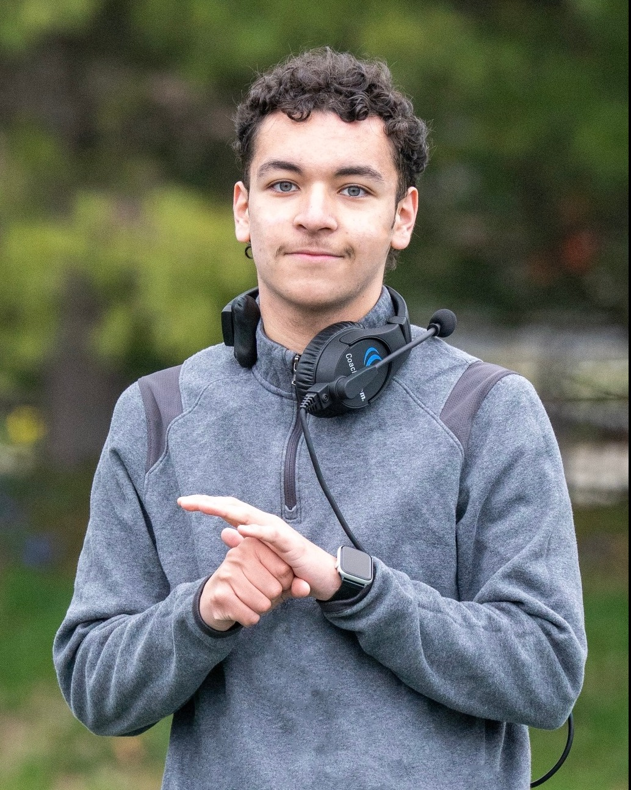
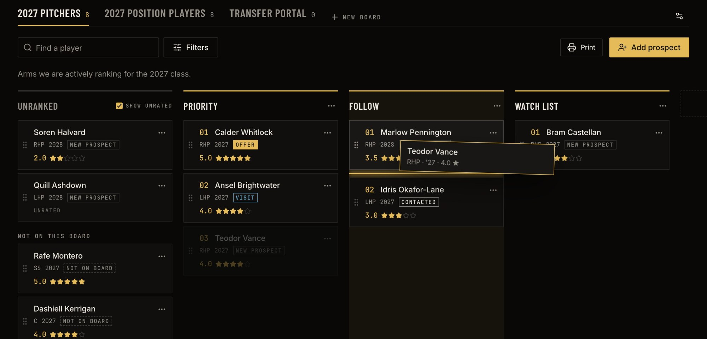
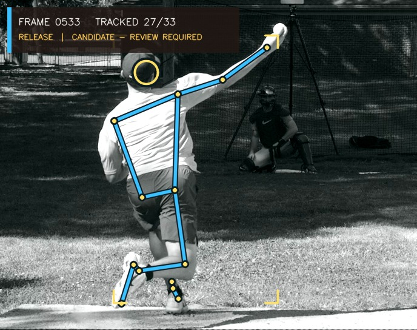
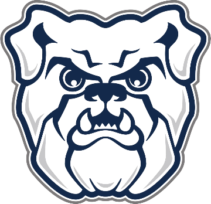
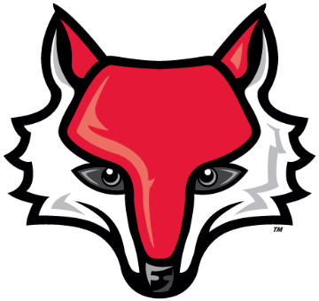
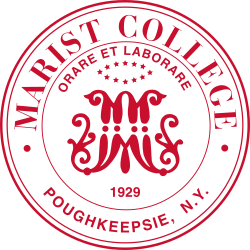

Lucas Baquero
Baseball tools I’ve built for player development, analysis and scouting.

Projects

SelfScout College
A recruiting workspace for college staffs: drag-and-drop boards, depth charts and a scholarship dashboard.

Pitch Tunnel
Rebuilds pitch flight from TrackMan data to show how long two pitches travel together before they split.

CommandIQ Motion Lab
Tracks a pitcher’s joints from one camera and lines the motion up with the TrackMan data for the same pitch.
More projects
CommandIQ
Intended-target review on game video
MLB Attack: Pitch Sequencer
A pitch plan for every count
Base Player Development Dashboard
R, Shiny and TrackMan reports
Hitter Damage & Swing Efficiency
R, Python and Statcast model
Home Plate
Scheduling, payments and player results in one app
SelfScout
Mobile scouting and roster planning
DHD Self-Development App
Goal tracking for players and coaches
Experience

Butler Baseball
Player Development and Scouting Remote Volunteer
September 2026 – Present
Remote
- Support Butler coaches with data analysis.
- Assist with pre-series scouting.
- Complete ad hoc projects across player development, scouting, and operations.
Diamond Hitting Development
Baseball Data and Development Intern
April 2026 – Present
Remote
- Lead the creation of internal data systems and external user interfaces for DHD clients.
- Created the DHD hub app, where players and coaches track short-term and long-term goals.
- Serve as point of contact for DHD service interest from users of the Trafton Comparison app.
SportsForce Baseball
Scouting Intern
Summer 2026
Remote
- Evaluated uncommitted hitters and pitchers through video and metrics.
- Supported players navigating college baseball recruitment.
- Completed ad hoc data projects in R and Python.
Marist Sports Network
Co-Founder, Executive Producer, and Webmaster
August 2025 – Present
Poughkeepsie, NY
- Produce weekly and bi-weekly episodes of MSN’s “Red Fox Report” and pregame shows.
- Turned the Red Fox Report into the MSN brand, integrating Marist Hockey, student radio broadcasts, and a hand-built 24/7 stream on MSN Radio.
- Oversee every MSN department: Production, Hockey, Live Broadcasts, and Radio.

Marist Football (D1, FCS)
Offensive Line Student Assistant
August 2024 – December 2025
Poughkeepsie, NY
- Student assistant to the offensive line coach: play signaling, recruiting and player personnel tasks, and on-field coaching of the offensive line.
- Handled operations as assigned, including laundry, warehouse inventory, and equipment.
Big Apple Umpires
Umpire
March 2024 – Present
Long Island, NY
- Umpire games from 8U through 15U across Long Island, applying classroom and on-field officiating training.
- Hold players, coaches, and parents to high standards of respect and sportsmanship.
Hard90 Baseball
Assistant Coach, 8U/10U
February 2023 – March 2024
Queens, NY
- Supported 8U and 10U coaches by teaching fundamental baseball principles.
- Instructed players in hitting, fielding, and pitching in individual, group, and full-team settings.
- Handled administrative responsibilities, including practice coordination and offseason camps.
Education

Marist University
Bachelor of Arts in Communication, Sports Communication concentration
August 2024 – May 2027
GPA 3.69 / 4.00
Coursework: Microeconomics, Macroeconomics, Statistics, Social Ethics and Economics, Sports Broadcasting, Sports Culture and Communication, Issues in Sports Media, Sports Feature Writing, Sports Social Media